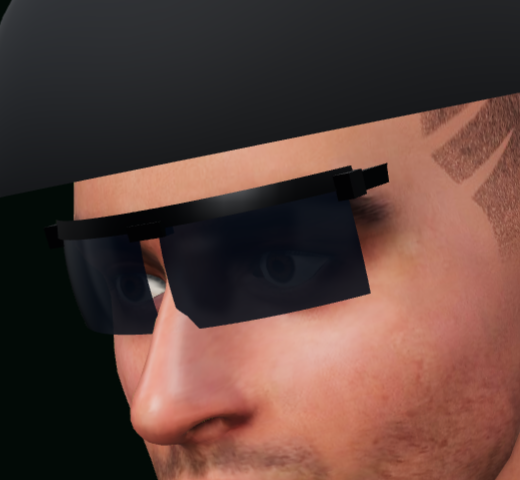
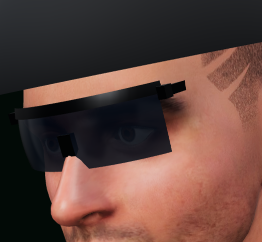
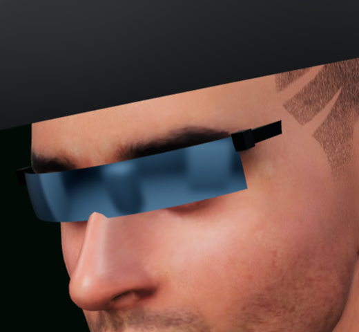
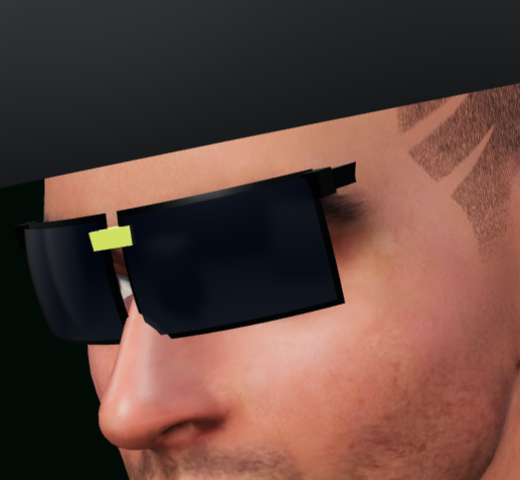

1 · BLADEдвухлинзовые полуободковые, планка-браулайн — спорт-классика

2 · SHIELDцельный щиток — смелый Sutro-стиль, пол-лица

3 · VISORзеркальная полоса без оправы — киберспорт/футуризм

4 · RADARполный обод, глухие линзы, лаймовый мостик — про-теннис